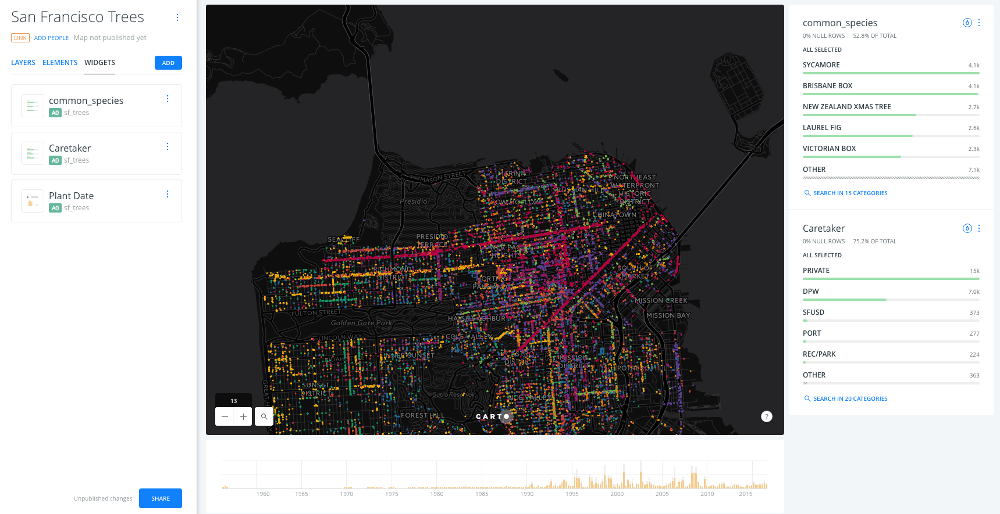

San Francisco tree map
1. Import and create map
1. 1. Download and import the dataset
- Go to https://team.carto.com/u/builder-demo/tables/sf_trees/public/map
- Download the dataset as a CSV file
- Go to your account and import it using the NEW DATASET options
1. 2. Dataset view
- Take a look on the dataset
- Switch between the metadata and the SQL view, try any simple query like limiting the result.
- Take a look on the spatial distribution using the PREVIEW option
- Click on CREATE MAP.
2. Layers and styles
2. 1. Ordering of the layers in the Builder
-
Change the basemap to the Dark Matter (labels below) basemap and check the different basemaps options.
-
Note how the layer we added gets the A0 identifier. This is not important now but it will be later when adding analysis and widgets.
2. 2. Layer options
- DATA:
- This interface gives a general view of the fields the layer, its name and its data type but also from there you can add them as widgets.
- Use the slider button to switch from VALUES to SQL. The SQL view allows more advanced users to manage data in a more precise way.
- Finally, use the button in the bottom left corner of the map to switch between Data view and Map view.
- STYLE:
- In the Aggregation menu, select NONE*.
- In the FILL options, select BY VALUE and then choose the
common_speciescolumn to color the dots depending on its values. - Change the size of the dots to
3and change the stroke value of the points to0.
- POP-UP:
- Select the HOVER tab and the LIGHT style for the hover infowindow.
- In the Show Items options, select the
common_speciesfield and change its name to Common Species. - By doing this, a pop-up will appear when we hover over the points on the map.
3. Widgets
3. 1. Category Widget
- Navigate back to WIDGETS pane and click on ADD WIDGET.
- In the options of the CATEGORY tab, click the common_species and caretaker checkboxes in order to have widgets that display the different categories of the common_species and caretaker fields. Click CONTINUE to add the widgets on the map.
3. 2. Time series widget
- Back to the main menu, go to WIDGETS tab and click on ADD WIDGET.
- In the options of the TIME-SERIES tab, select the plant_date checkbox in order to display the dates were the trees were planted. Click CONTINUE to add the widgets on the map.
3. 3. Change order and name of widgets
- Back to the main menu, select the WIDGETS tab to see a list with the widgets that we have added.
- We can drag and drop the widgets in the widget pane to change their order.
- We can change the name of our widgets by selecting the RENAME option of the widget menu or by double clicking on the widget name in the WIDGETS pane.
- Change the name of the common_species widget to Common Species, the name of the caretaker widget to Caretaker and the name of the plant_date widget to Plant Date.

4. Share map
- At the bottom of the main menu, click on SHARE.
- Go to PUBLISH tab and click on PUBLISH button that is below the Map name in order to share our map.
- After clicking on PUBLISH, we can select the options that we want to share our map.